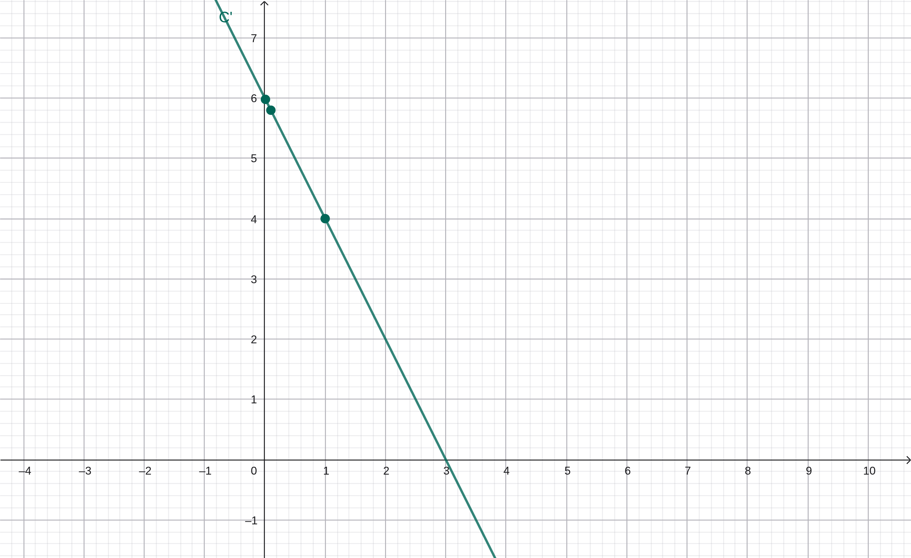

Análisis de la tasa de cambio de un medicamento

En la asignatura de Matemática Optativa se aplicó el cálculo diferencial para analizar la variación de la concentración de un medicamento en el tiempo. Se utilizó como modelo la función derivada: C'(t) = -2t + 6.
La derivada permitió interpretar la tasa de cambio instantánea del medicamento en el organismo, evidenciando que la disminución no ocurre de manera constante, sino que depende del instante evaluado.
Mediante aproximaciones sucesivas y representación gráfica en GeoGebra, se observó una pendiente negativa que confirma la reducción progresiva de la sustancia. Este análisis demuestra la utilidad del cálculo diferencial para comprender fenómenos biológicos reales.
La actividad permitió vincular los conceptos abstractos de derivadas con aplicaciones concretas en el campo de la salud, fortaleciendo el pensamiento analítico y la interpretación matemática.